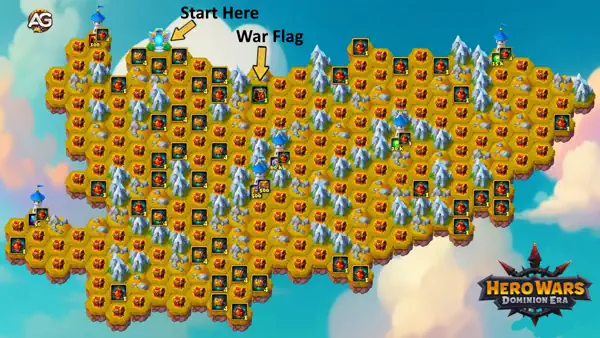
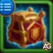
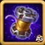
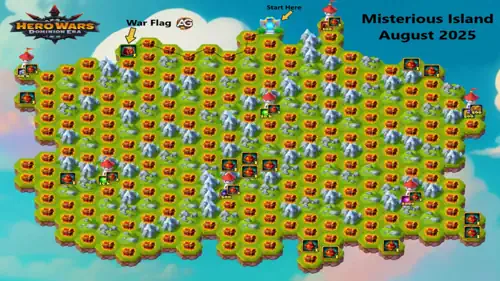
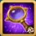

The Mysterious Island event returns this October in Hero Wars: Dominion Era, offering players an exciting chance to navigate through a maze-like map filled with hidden rewards, War Flag chests, and powerful resources. Whether you're a seasoned explorer or tackling the island for the first time, this guide will help you make the most of your adventure.
In this updated guide, you'll discover the best routes to reach the final towers, tips to maximize your rewards, and key insights into how to collect wooden logs to unlock bridges. From emeralds to artifact chests and seasonal treasures, every step counts so plan your moves wisely!
Mysterious Island Map October, 2025.

Mysterious Island Map 01 October, 2025, a seasonal event in Hero Wars: Dominion Era.
How Does the Mysterious Island Work?
While navigating the Mysterious Island map, you'll encounter blue question mark icons each one marking a possible step your explorer can take.. The map is structured like a maze, and with each move, you'll reveal a hidden tile. Your ultimate goal is to reach the final tower located at the far end of the map.
Bridges on the island need to be activated to progress, and you'll do that by collecting wooden logs scattered along your path. Keep in mind that all players experience the same layout and reward placements during the event.
Top Tier Rewards Available on Mysterious Island
Earn up to 15,000 Emeralds along with two exclusive Pattern Chests
Collect 110 Skin Stone Chests, each paired with 2 Pattern Chests
Gather 75,000 Titan Skin Stones plus 3 bonus Pattern Chests
Receive 500 Titan Artifact Spheres accompanied by 2 Pattern Chests
Unlock 100 Absolute Artifact Chests bundled with 2 Pattern Chests
Secondary Rewards and Bonuses
War Flag Chest
Purple Gift of Dominion
Additional Pattern Chests
Seasonal Treasure Chests with random contents
Optimal Paths to Big Rewards
Each season, the shortest and most efficient routes to the top rewards are discovered and mapped. In the October version of Mysterious Island, specific paths require fewer moves to reach major reward towers. However, valuable rewards also lie slightly off the main trails, so consider strategic detours when necessary.
Explorer energy is consumed with each move. If your energy runs out and is not replenished, automatic recovery stops. It’s recommended to plan your exploration for times when you’re actively engaging with the event.
Seasonal Treasure Chest Mechanics
Throughout the map, you’ll find seasonal treasure chests that contain random loot. These rewards are determined at the time the chest is opened. The mechanics behind the generation of these chests remain somewhat unclear, but they offer valuable materials and currency.

All About War Flag Chests
War Flags are a powerful item in Dominion Era, and you can obtain them from special chests called War Flag Treasure Chests. There are four different versions of these chests, and the flags available vary by event season.
War Flag Treasure Chest – Version 1
Grants a choice between the following banners: Decline, Pet Strength, Fervor, or the Golden Thread.
Table: War Flag Treasure Chest – Version 1
Reward
Image
War Flag of Decline
War Flag of Pet Strength
War Flag of Fervor
500 Golden Thread

War Flag Treasure Chest – Version 2
Contains banners from the previous season’s selection, allowing you to catch up or reinforce older flag strategies.
Table: War Flag Treasure Chest – Version 2
Reward
Image
War Flag of Fervor
500 Golden Thread
War Flag Treasure Chest – Version 3
Offers a selection that includes Decline, Pet Strength, Frost, Swift Warriors, and the Golden Thread.
Table: War Flag Treasure Chest – Version 3
War Flag
Image
War Flag of Swift Warriors
War Flag of Decline
War Flag of Pet Strength
War Flag of Fervor
War Flag of Frost
500 Golden Thread
War Flag Treasure Chest – Version 4
Provides access to a pool of six total war flags, offering more flexibility in your banner collection.
War Flag of Swift Warriors
Table: War Flag Treasure Chest – Version 4
War Flag
Image
War Flag of Swift Warriors
War Flag of Decline
War Flag of Pet Strength
War Flag of Fervor
War Flag of Frost
War Flag of Recovery
500 Golden Thread
How to Get War Flags in Hero Wars: Dominion Era
Every month, the Mysterious Island event provides an opportunity to earn War Flags. Visit the Alexandre Games blog for updated guides detailing the best routes and efficient strategies for each season. Since there are four types of flags and their availability changes each time, staying informed is key to maximizing your rewards.

How to Get War Flags in Hero Wars: Dominion Era.
Can Free-to-Play Players Get War Flags?
Absolutely! Even as a free-to-play player, it's possible to earn at least one War Flag during every Mysterious Island event. The key is following an efficient path and managing your explorer moves wisely. Every month, the Alexandre Games blog shares updated guides highlighting the best F2P-friendly routes to secure the minimum rewards no spending required!

Do Explorer’s Moves Expire After a Seasonal Adventure Ends?
No need to worry! If you still have unused Explorer’s Moves when the current Seasonal Adventure wraps up, you won’t lose them. Those remaining moves will carry over and be available to use in the next Seasonal Adventure event. It’s a great way to stay ahead in future challenges!
Conclusion
The Mysterious Island event is more than just a simple exploration map. With strategic planning, efficient movement, and awareness of hidden rewards, you can claim some of the most valuable resources in Hero Wars: Dominion Era. Don’t forget to follow trusted sources like Alexandre Games for updated walkthroughs and optimal path guides every month!
Did you like our Mysterious Island Guide for Hero Wars Web and Facebook? Is there something you didn't understand or would like to suggest changes to? We invite you to join our comment section on the Alexandre Games Blog page. Feel free to express your opinion, clarify your doubts, and share your suggestions. Click the button below to get started:


 Complete Guide to Pet Adventure Maps for Hero Wars: Dominion Era
Complete Guide to Pet Adventure Maps for Hero Wars: Dominion Era
 How to Activate Promo Code Rewards in Hero Wars: Dominion Era 2025
How to Activate Promo Code Rewards in Hero Wars: Dominion Era 2025
 Hero Wars Dominion Era: Character Guides - Dominate with Every Hero
Hero Wars Dominion Era: Character Guides - Dominate with Every Hero
 Complete Pet Guide for Hero Wars: Dominion Era
Complete Pet Guide for Hero Wars: Dominion Era
 Hero Wars: Dominion Era Tier List 2025 Best Heroes Ranked
Hero Wars: Dominion Era Tier List 2025 Best Heroes Ranked